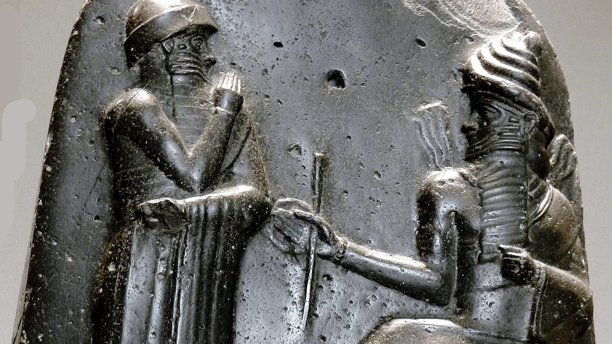

¿Quién fue Hammurabi?
Hammurabi fue el sexto rey de la dinastía amorrea de Babilonia, que gobernó desde aproximadamente 1792 a.C. hasta 1750 a.C. Es célebre por haber unificado gran parte de Mesopotamia bajo su dominio y por promulgar el famoso Código de Hammurabi.
Orígenes y ascenso al poder
Hammurabi heredó el trono de su padre, Sin-Muballit. Durante su reinado, expandió el territorio babilónico mediante alianzas estratégicas y conquistas militares.
El Código de Hammurabi
Su mayor legado es el Código de Hammurabi, uno de los primeros códigos legales escritos en la historia. Este conjunto de leyes regulaba aspectos sociales, económicos y penales para mantener el orden en su reino.
Legado
Hammurabi es recordado como un líder visionario que sentó las bases para el desarrollo del derecho y la administración en la antigua Mesopotamia.
Además de su labor legislativa, Hammurabi fue un hábil administrador que fomentó el desarrollo económico y cultural de Babilonia. Bajo su gobierno, se mejoraron las infraestructuras como canales de riego, templos y caminos que facilitaron el comercio y la comunicación entre las ciudades del imperio. Su gobierno también estuvo marcado por la promoción de la justicia y la protección de los débiles, estableciendo un equilibrio entre el poder real y las necesidades del pueblo. Por todo ello, Hammurabi es considerado una de las figuras más importantes en la historia antigua, cuyo impacto perduró mucho después de su muerte.
Hammurabi, uno de los monarcas más emblemáticos de la antigua Mesopotamia, gobernó Babilonia desde aproximadamente 1792 a.C. hasta 1750 a.C. Durante su reinado, no solo consolidó el poder de Babilonia mediante una serie de conquistas militares y alianzas estratégicas, sino que también impulsó un significativo desarrollo en las áreas administrativas, legales y culturales que marcaron un antes y un después en la historia de la civilización humana. Su legado más famoso, el Código de Hammurabi, fue uno de los primeros sistemas legales escritos que abarcaban no solo castigos sino también regulaciones para el comercio, la agricultura, el matrimonio, y las relaciones sociales. Este código estableció principios fundamentales de justicia que buscaban equilibrar la protección de los débiles con el mantenimiento del orden social, lo que reflejaba una visión avanzada para su época sobre la administración del estado y la gobernabilidad. Más allá de la ley, Hammurabi promovió la construcción y mejora de infraestructuras críticas como canales de riego que aumentaron la productividad agrícola, templos que reforzaban la cohesión religiosa y cultural, y caminos que facilitaban el comercio y la comunicación entre las diversas ciudades y regiones del imperio. Su habilidad para combinar la fuerza militar con una administración eficaz y un sentido de justicia hizo que Babilonia se convirtiera en un centro de poder, cultura y economía en la región. La influencia de Hammurabi trascendió su vida y reinado, sirviendo de modelo para futuros sistemas legales y gobiernos, y dejando una huella imborrable en la historia antigua que todavía es estudiada y admirada hoy en día.